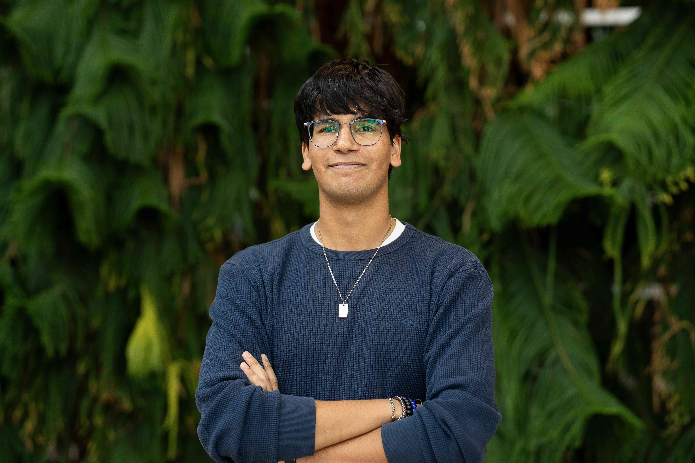
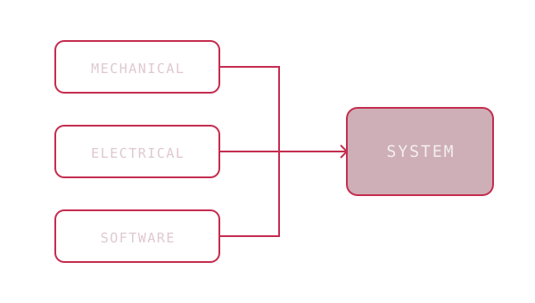
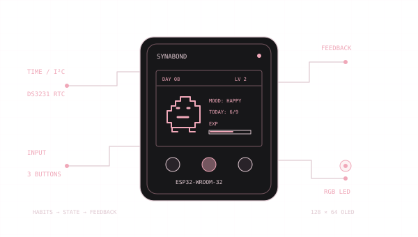
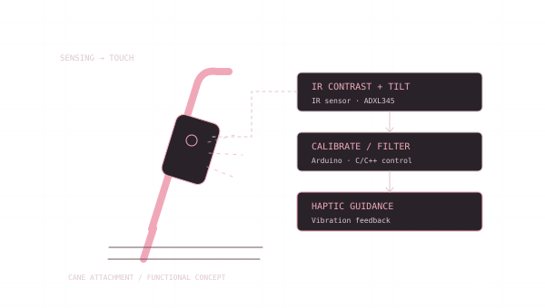
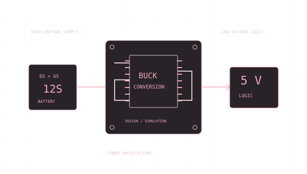

Integrate
Review the interfaces between physical parts, electronics, and software. On MAST, I review dimensions and connections across Avionics, Fuselage, Payload, and Landing Gear.

// ENGINEERING PORTFOLIO
McMaster University · Level III
Mechatronics Engineering & Society
Break. Build. Innovate.
I connect embedded software, electronics, and human-centred design. My projects focus on how the parts fit together, how a team moves the work forward, and who the system is for.

01 / SELECTED WORK
Explore the decisions, technical work,
and people behind each project.

Architecture illustrationAn ESP32 habit tracker connects nine daily routines to a virtual pet, with RGB mood feedback and a reminder chosen from habits completed together.

Signal-flow illustrationA white cane attachment that reads crosswalk markings and cane tilt, then signals a course correction through vibration.

Power architecture illustrationI designed and simulated a buck converter to power 5 V logic from a 12S battery supply and helped coordinate the drone team’s electrical build.
02 / ABOUT
As a kid, I was always taking things apart, from toys and pens to my family’s TV. The messes could be discouraging, but they came from a deep curiosity about how things worked. Rebuilding my first pen gave that curiosity a direction, long before I knew to call it engineering.
High school physics turned that habit into a love of solving problems I could connect to everyday life. I earned the highest Grade 12 physics mark at my school, became head of training for our DECA chapter, and helped lead our computer club as it organized ArrowHack, our school’s first hackathon.
That path brought me to McMaster University. I’m now a third-year Mechatronics Engineering & Society student, bringing together mechanical design, electronics, and software. The community, co-op opportunities, and chance to keep learning are part of why I chose McMaster.
I still believe a project only fails when I give up. Whether I’m debugging an embedded system, learning a new tool, or working through a problem with a team, I keep looking for the next fix. I sum up that mindset in three words. Break. Build. Innovate.
Read my résumé ↗// EDUCATION
B.Eng., Mechatronics Engineering & Society
Level III · 2024 to 2029 (expected)
03 / HOW I WORK
Review the interfaces between physical parts, electronics, and software. On MAST, I review dimensions and connections across Avionics, Fuselage, Payload, and Landing Gear.
Break large tasks into steps a team can act on. On the drone team, I co-planned the electrical build and organized weekly syncs for eight members.
Make it easier to say “I’m stuck.” At coding camp, I taught Python and basic algorithms, developed a curriculum with other educators, and helped students complete their final projects.
04 / EXPERIENCE & LEADERSHIP
Technical work grows through
coordination and clear communication.
Review dimensions and interfaces across four aircraft subsystems, raise integration concerns, and propose mitigations. Planned tests cover battery resistance and discharge rate.
Coordinated four sprints, maintained the Azure DevOps backlog, and built Copilot and Loop workflows for meeting notes and leadership actions. Acted as project manager for nine days and trained the incoming coordinator.
Planned the electrical build with my co-lead, divided the work into tasks for eight members, and designed and simulated a buck converter in Altium.
Represent MEwD at MES meetings, make the case for funding and support, document action items, and report on resource use and progress.
Taught a group of 30 students in Grades 6 to 10 each day alongside two other educators. Co-developed a Python curriculum and delivered a cryptography escape-room workshop.
9 projects
Try a tool such as Arduino, or browse all projects.